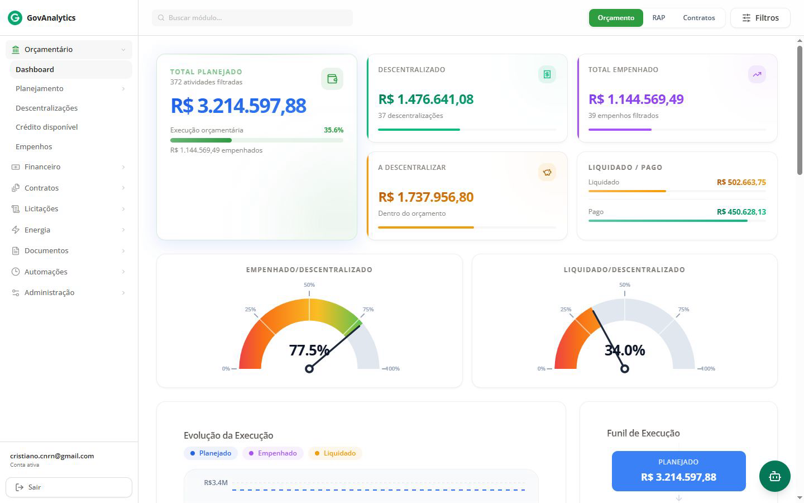
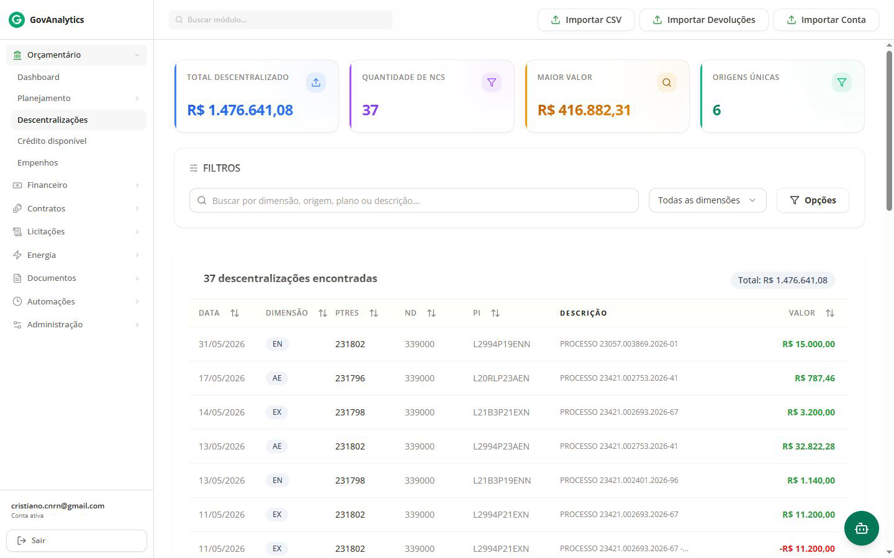
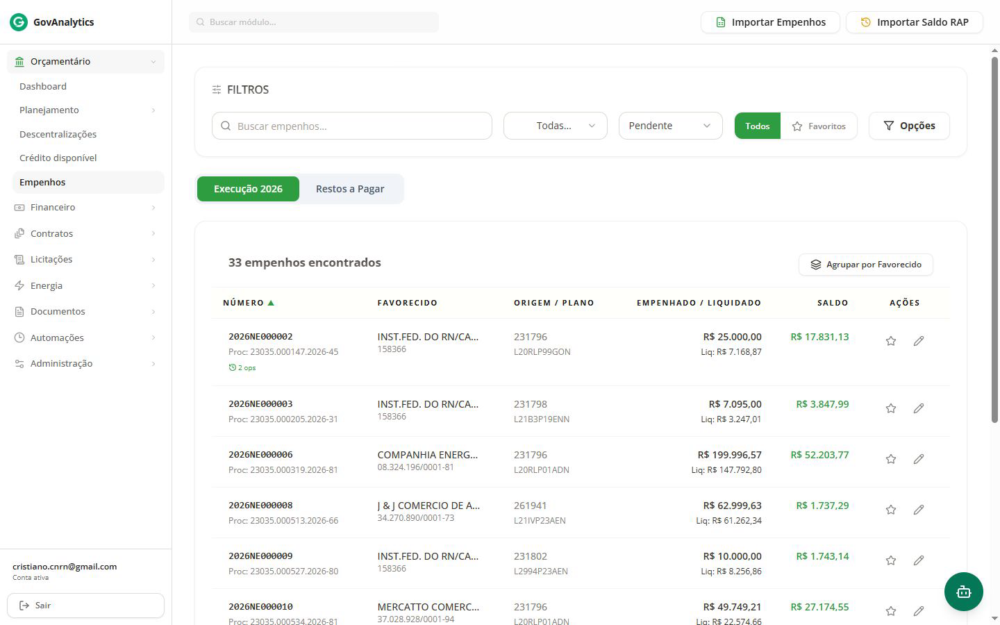
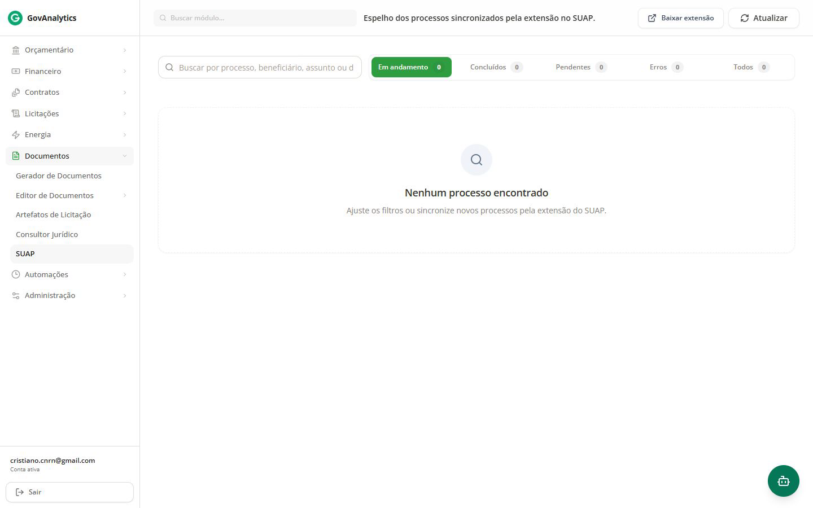
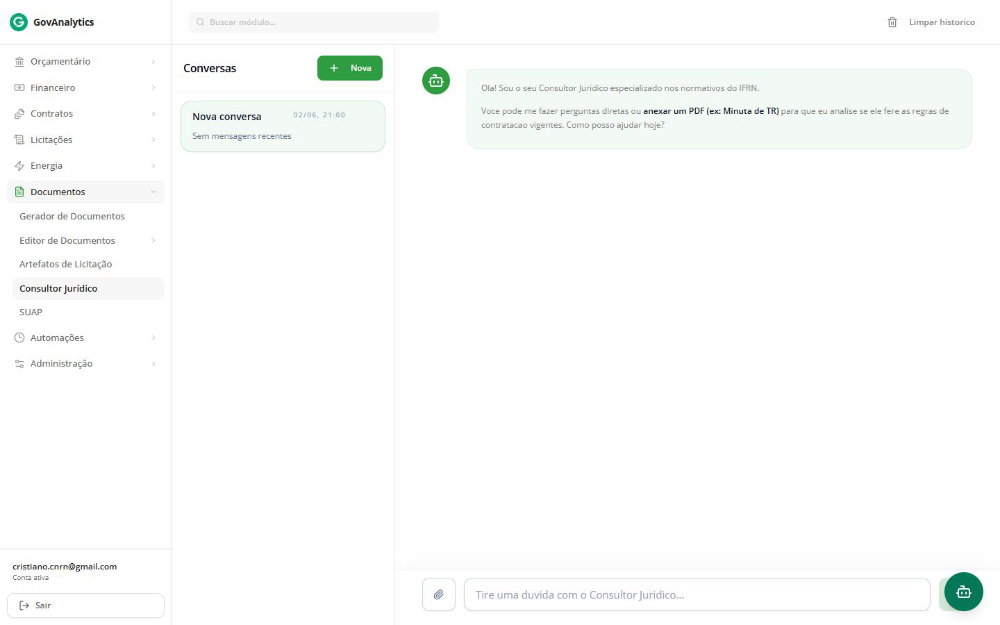
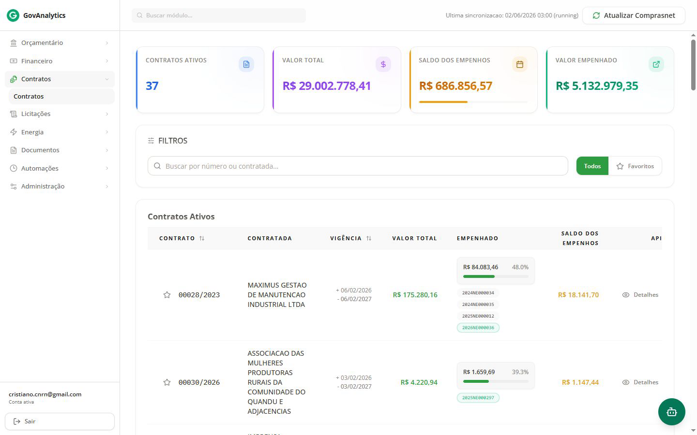

Inteligência de dados, governança orçamentária e transparência ativa para a administração pública federal
Os sistemas oficiais de planejamento e orçamento na Administração Pública Federal falham em oferecer uma visão gerencial integrada para a tomada de decisões imediatas.

O GovAnalytics atua como uma camada inteligente que agrupa dados de múltiplas fontes, reduz burocracia e dá clareza para a tomada de decisão estratégica.

Monitoramento de créditos disponíveis e distribuição interna de recursos para evitar perdas ou ineficiências na aplicação orçamentária.

O maior diferencial do sistema é sua adequação para Instituições Federais que utilizam o SUAP, criando uma ponte invisível entre o planejado e o gasto executado.

O GovAnalytics incorpora IA generativa para tornar as informações contábeis complexas acessíveis em linguagem natural aos tomadores de decisão.

O software já provou sua eficiência na prática e está pronto para ser escalado para toda a instituição e outras entidades da administração pública federal.
